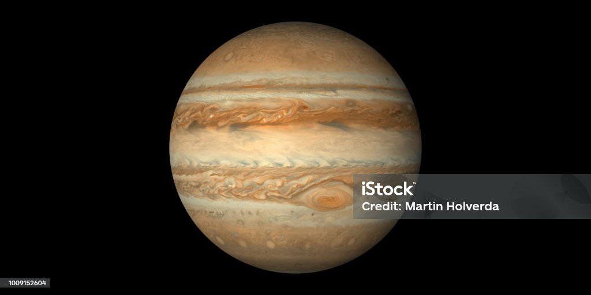

Сатурн
Сатурн — шестая планета от Солнца и второй по величине газовый гигант Солнечной системы после Юпитера. Он знаменит своей впечатляющей системой колец, которые видны даже в небольшой телескоп. Сатурн — одна из самых красивых и загадочных планет нашей системы.
Кольца Сатурна состоят из миллиардов частиц льда и камня, размером от крошечных пылинок до огромных глыб. Общая ширина колец достигает 282 000 км, но их толщина в среднем составляет всего около 10-30 метров. Кольца разделены на несколько основных групп, между которыми находятся «щели».
Сатурн — газовый гигант, состоящий в основном из водорода и гелия. Его плотность настолько мала, что если бы существовал достаточно большой океан, Сатурн мог бы в нём плавать! Это самая малоплотная планета Солнечной системы.
На планете дуют ураганные ветры, скорость которых может достигать 1800 км/ч. На северном полюсе Сатурна существует удивительное атмосферное явление — гигантский шестиугольный вихрь, который остаётся стабильным на протяжении десятилетий.
Сатурн обладает рекордным количеством спутников — их известно более 140. Крупнейший из них, Титан, является вторым по величине спутником в Солнечной системе и единственным, имеющим плотную атмосферу.